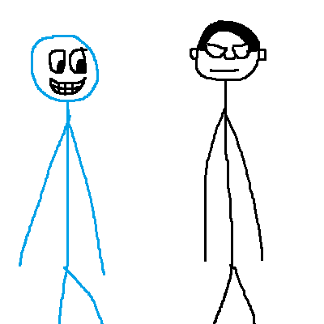

第143篇 日记
日常生活：人人都爱鹅卵石
鹅卵石是什么？为什么人人都爱它？
一颗鹅卵石
人人都爱鹅卵石，为什么这么说呢？这是因为从古至今，关于鹅卵石的文字就都是没有贬鹅卵石的，比如上语文课时杨老师讲的：
在我们眼前出现了一条弯弯的，清如明镜的小河，河底的鹅卵石清晰可见。岸边的杨柳倒映在水面上。更给小河增添了许多姿色。
这段话中就提到了鹅卵石，说明鹅卵石是美丽的，是值得人们喜爱的。
讲这段文字时，李钧宸总是笑着望着我们。这是因为他很喜欢鹅卵石，他的笔名就是“鹅卵石”，而且他的网名就叫“jdle鹅卵石”，他都自喻鹅卵石了。
